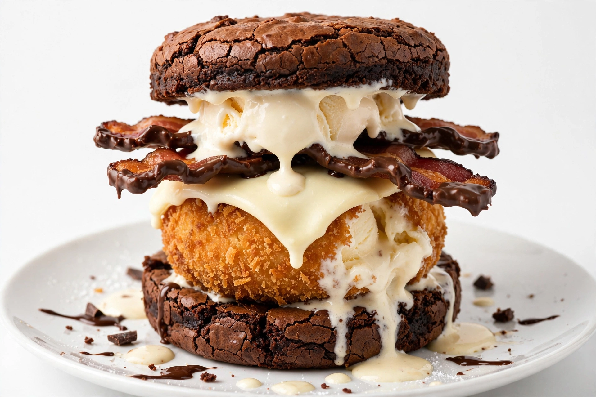

La Postre-Burger - Dulce Asesina

La encargada de cerrar la categoría ¿De verdad alguien se come esto? Es la única hamburguesa que es 100% postre pero se ve como una hamburguesa de verdad. En esta receta, el "pan" es un brownie denso, la "carne" es una bola de helado de vainilla empanizada y frita, el "queso" es una feta de chocolate blanco derretido y el "tocino" es tocino caramelizado con chocolate y sal. Dulce, salado, caliente y frío al mismo tiempo. Un crimen perfecto.